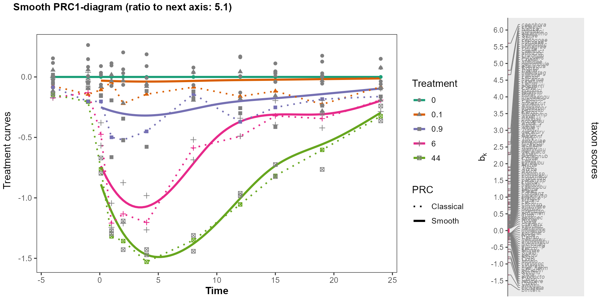
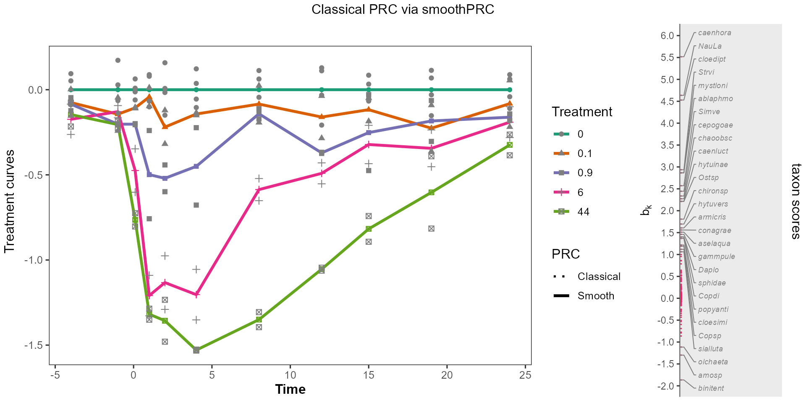

The aim of the PRC package is to help ecologists unravel
time-dependent treatment effects from multivariate response
Y in longitudinal designed experiments. Principal
response curve analysis (PRC) (Van den Brink and Ter Braak
1999) uses partial redundancy analysis with model
with
and
as factors. Here
is a covariable in the language of ordination (Legendre and Legendre 2012; Ter Braak and Prentice 1988).
Partial redundancy analysis (RDA) is equivalent to reduced rank
regression with concomitant variables, where, in PRC,
is a concomitant factor variable (that is, a set of concomitant
indicator variables) (Ter Braak 2023; Ter Braak and Looman 1994; Van den Brink and Ter Braak
1999). Version 2.0.0 of the PRC package adds
smoothPRC, which produced smooth PRC curves. See https://github.com/CajoterBraak/PRC
PRC is is least-squares reduced rank regression with
as concomitant factor variable (Van den Brink and Ter Braak 1999; Ter Braak 2023). In
SmoothPRC, a ridge-type penalty is applied to the coefficients forming
the ordination axes, also called latent variables. With such a penalty
the penalized least-square solutiuon is still an eigen problem. The
eigen problem in smoothPRC includes penalty paramaters (smoothness
parameters), which thus need to estimated also. In
smoothPRC this is achieved using the LMMsolver
package (Boer
2023). All eigen vectors can be computed simultaneously in
classical PRC using a singular value decomposition. In smoothPRC
different eigen vectors may need different smoothness parameters, so
that it is natural to calculated them in turn. This note focuses on the
first (dominant) eigen vector. Subsequent eigen vectors can be obtained
by specifyin previous vectors as covariables (in formula
fixed).
Define the model:
Y = QA + ZM + E
with Y the response matrix, Q a matrix with concomitant variables, Z a matrix of predictor, E an error matrix, and A and M matrices of unknown regression coefficients that must be estimated from the data Y, Q and Z.
In partial RDA, the focus lies on a low-dimensional representation of the effects of Z on the response, that is on M, with the effects of Q partial out. To this aim and with the orthogonal projector on Q, define Z = Z - Z, the matrix of residuals of the regression of Z on to Q. Now, Q and Z are orthogonal and span the same space as Q and Z. Moreover, the regression coefficients associated with Z are the same as those with Z, while the regression coefficients associated with Q change. The original model can thus be rewritten to
Y = QA + ZM + E
The low-dimensional representation is obtained by a rank-restriction on M. With the rank-1 restriction M = cb, where c is a vector of canonical coefficients and b is a vector of loadings (species scores),
ZM = Zcb = xb, which is a partial PCA model with constraint x = Zc with x the constrained site scores. Partial redundancy analysis is thus both reduced rank regression with concomitant variables and a partial PCA with constraints. Note that A in the rewritten formula can be obtained by regression Y on Q only.
The transition formulas specify the eigen problem of partial RDA and are useful to solve for the first eigen vector by iteration. The convergence of the iteration is accelerated by blocking and Anderson iteration. The transition formulas of partial redundancy analysis are:
x = Yb
c = (ZZ)Zx
x = Zc
b=Yx
This set of equation forms the eigen problem
b=YZ(ZZ)ZYb
This eigen equation is obtained by substitution of symbols, starting with the last transition formula and ending with substitution of x to Yb of the first equation.
In classical PRC, Q is an indicator matrix defined by the factor time and Z is an indicator matrix defined by the interaction of the factors time and treatment. In words, the main effects of the factor time are partialled out of the interaction effects and the reduced rank (dimension reduction) is applied to the time-dependent treatment effects. In classical PRC, x = Zc with Z orthogonal to Q and c obtained from regression of x on to Z. In smoothPRC below, Z is not explicitly easily available, whereas Z is. But, the regressions of x on Q and Z and of x on Q and Z yield identical fitted values, say y.
Consequently,
x = Zc = y - Qa
where y is obtained from a regression on Q and Z and Qa from a regresion of x on Q alone. In pseudo R-code:
x = fitted(lm(x ~ Q + Z)) - fitted(lm(x ~ Q)).
By consequence, Zc can be computed as a difference of the fitted values of two models, the full model with Q and Z and a null model with Q alone; in PRC, the model with time and treatment and the model with time only, respectively.
In smoothPRC time is treated as a quantitative variable. The model is allowed to be highly non-linear by transformation to a B-spline basis. The single variable time is thereby replaced by a set of variables (B-splines), like time is replaced by a set of indicator variables in classical PRC. As there can and should be many variables in the B-spline basis, the model is over-parametrized and the partial RDA becomes an unconstrained partial PCA. That is why penalized partial RDA is used in smoothPRC. With a treatment with a quantitative basis, a dose, smoothPRC uses a two-dimensional tensor P-spline (Boer 2023), that is, a Kronecker product of B-splines with two penalty parameters, one for the time and the other for treatment. In smoothPRC, the main effect of time is a one-dimensional smooth in time. Both models are fitted using the R package LMMsolver (Boer 2023). The main effects of time cannot be partialled out as in classical PRC as the smooths are not projectors. Therefore, the formula in classical PRC, in pseudo R-code
x = Zc = fitted(x ~ Q + Z)) - fitted(lm(x ~ Q))
is replaced in smoothPRC by the difference of the fitted values of a model with both time and treatment and the fitted values of a null model with only time. In the default smoothPRC model, it is the difference of the fitted values of a 2d-spline of time and treatment and the fitted values of a 1d-spline of time.
In summary, the transition formulas of smoothPRC are the three equations, of which the second is motivated above,
x = Yb
x = fitted(smooth of time and treatment) - fitted(smooth of time)
b=Yx
After convergence, x is replaced by x - fitted(smooth of time), so a to remove the time effect from the ‘unconstrained’ site scores. This is the entry in the output of smoothPRC.
Also, the PRC graph takes one level or value of the treatment a reference level or value. After convergence, the values of the PRC curves are obtained from the full model by subtracting from the fitted values the predictions for the data set derived from the original data with all treatment levels or values replaced by the reference level or value (0). This is the entry in the output of smoothPRC.
By default, all scores are rescaled such that the mean square of the
species scores
is 1. This makes smoothPRC behave as doPRC with
scaling = "ms".
The example uses the data from the chlorpyrifos experiment (Van den Brink and
Ter Braak 1999) available in the vegan package,
with the design of the expriment: 12 cosms with 5 treatments inclusing
the control (no chlorpyrifos) measured at 11 time points. The names
Time and Treatment are expected in
smoothPRC.
#the chlorpyrifos experiment from van den Brink & ter Braak 1999
data(pyrifos, package = "vegan") #log-transformed species data from package vegan
Y <- pyrifos
Design <- data.frame(Time=gl(11, 12, labels=c(-4, -1, 0.1, 1, 2, 4, 8, 12, 15, 19, 24)),
Treatment=factor(rep(c(0.1, 0, 0, 0.9, 0, 44, 6, 0.1, 44, 0.9, 0, 6), 11)),
cosm = gl(12, 1, length=132))The default model is set up by:
library(LMMsolver)
smoothPRC_model <- set_smoothPRC_model(data = Design)The model specifications for the null model and alternative models are:
smoothPRC_model$splineH0
#> ~spl1D(time, nseg = 6, degree = 3, pord = 2)
#> <environment: 0x0000016b4034fd88>
smoothPRC_model$spline
#> ~spl2D(time, dose, nseg = c(6, 6), degree = 3, pord = 2)
#> <environment: 0x0000016b4034fd88>The null model is a spline function of time only, whereas the
alternative model uses a two-dimensional spline model in
time and dose. The time variable
is the quantitative version of the variable Time in the
Design.The dose variable the quantitative
version of the variable Treatment with dose is
set to 0 pre-application (negative times by default and, in general,
times before start_time.
smooth_PRC <- smoothPRC(Y, lmm_model = smoothPRC_model)
summary(smooth_PRC$obj[[1]])
#> Table with effective dimensions and penalties:
#>
#> Term Effective Model Nominal Ratio Penalty
#> (Intercept) 1.00 1 1 1.00 0.00
#> lin(time, dose) 3.00 3 3 1.00 0.00
#> s(time) 11.38 81 77 0.15 0.24
#> s(dose) 4.43 81 77 0.06 0.05
#> residual 112.19 132 128 0.88 0.30
#>
#> Total Effective Dimension: 132
summary(smooth_PRC$objH0[[1]])
#> Table with effective dimensions and penalties:
#>
#> Term Effective Model Nominal Ratio Penalty
#> (Intercept) 1.00 1 1 1.00 0.00
#> lin(time) 1.00 1 1 1.00 0.00
#> s(time) 0.86 9 7 0.12 121.17
#> residual 129.14 132 130 0.99 0.03
#>
#> Total Effective Dimension: 132
classical_PRC_model <- set_smoothPRC_model(
fixed= Yb ~ Treatment:Time,
fixedH0 = Yb ~Time,
spline = NULL,
splineH0 = NULL,
data = Design)
classical_PRC <- smoothPRC(Y, lmm_model = classical_PRC_model, n_axes = 1)
summary(classical_PRC$obj[[1]])
#> Table with effective dimensions and penalties:
#>
#> Term Effective Model Nominal Ratio Penalty
#> (Intercept) 1 1 1 1 0.00
#> Treatment:Time 54 54 54 1 0.00
#> residual 77 132 77 1 0.32
#>
#> Total Effective Dimension: 132
summary(classical_PRC$objH0[[1]])
#> Table with effective dimensions and penalties:
#>
#> Term Effective Model Nominal Ratio Penalty
#> (Intercept) 1 1 1 1 0.00
#> Time 10 10 10 1 0.00
#> residual 121 132 121 1 0.03
#>
#> Total Effective Dimension: 132Classical PRC is obtained by:
mod_prc <- doPRC(pyrifos ~ Treatment:Time + Condition(Time), data = Design)
#>
#> Some constraints or conditions were aliased because they were redundant. This
#> can happen if terms are constant or linearly dependent (collinear):
#> 'Treatment44:Time-4', 'Treatment44:Time-1', 'Treatment44:Time0.1',
#> 'Treatment44:Time1', 'Treatment44:Time2', 'Treatment44:Time4',
#> 'Treatment44:Time8', 'Treatment44:Time12', 'Treatment44:Time15',
#> 'Treatment44:Time19', 'Treatment44:Time24'The absolute correlation between the last two PRC models is 1, whereas the correlation between the smooth and classical PRC models is 0.97, 0.09
Here is the PRC diagram showing both models with species scores of the smooth version.
plotsmoothPRC(smooth_PRC, flip = FALSE, threshold = 1)
#> 122 species with names out of 178 species
Here is the plot for classical PRC via the plotting function of
smoothPRC:
plotsmoothPRC(classical_PRC, flip = TRUE, title ="Classical PRC via smoothPRC")
#> 28 species with names out of 178 species
classical_PRC$eig/mod_prc$CCA$eig[seq_along(classical_PRC$eig)]
#> X1
#> 1The first two eigenvalues agree up to numerical precision and the solid lines for smooth PRC overlay the dotted lines of classical PRC, illustrating that smooth PRC can reproduce the outcome of a classical PRC and thus is a real extension of classical PRC.